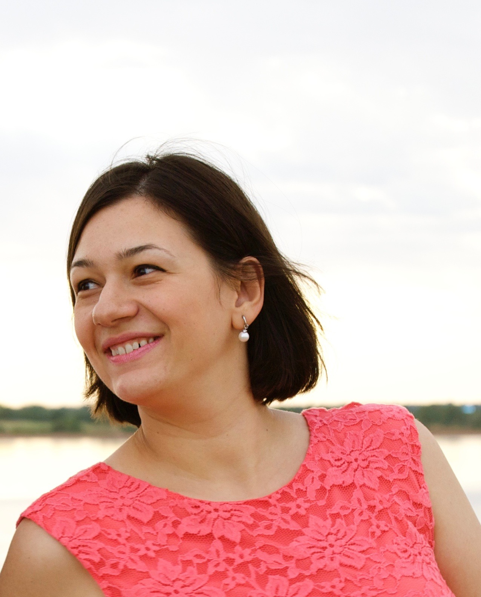

About me
"A nomad (Greek: nomas, plural nomades; meaning one roaming about for pasture, pastoral tribe) is a member of a community of people who live in different locations, moving from one place to another."
That is who I am am, this what my family does. I do not rely on Wikipedia for precise definitions, but in this case it is quite accurate.
Being always on the go and ready for a change, I have been looking for a brand new challenge for quite some time. The Rutgers Bootcamp seems to be it. It offeres the pathway to transition into a new industry and I am so lucky to have found coding. I fell in love with it since the first time I attempted it.
Roots and branches
I come from Southeast Europe. From Macedonia. I've travelled a little bit in Europe... Germany, Romania, Bulgaria, Greece, and Serbia. Just a tiny bit in the US... Florida, Texas, Kansas.. Couple road trips from Oklahoma to New Jersey...
Some of my best friends are also nomads. They roam in Spain, Sweden, Macedonia, the Netherlands, and the UK. Some in Oklahoma, Texas, California, Kentucky, and Kansas. I wish we could see each other more often. But life gets busy and there are so many excuses. But I deeply believe that we deeply love each other and miss each other.
Living in Oklahoma from 2007-2014 was quite the experience. Met people that I will miss forever. Mentors, friends, colleagues. Living in Princeton, NJ is similar to living in Skopje, Macedonia. Close to both ocean and mauntain; half-way between New York City and Philadelphia. Marked by the many crossroads... Skopje - my birth place, has been known as an important route from Europe to the Middle East; an ultimate crossroad of people and trades. But unlike Princeton, I am completely biased to Skopje. The city that I carry in my heart; the place that I don't visit nearly as much as I want to or as much as my soul yearns.
Connect with me